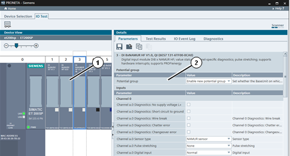
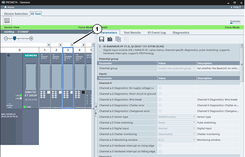
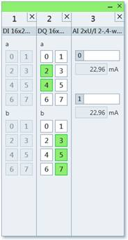
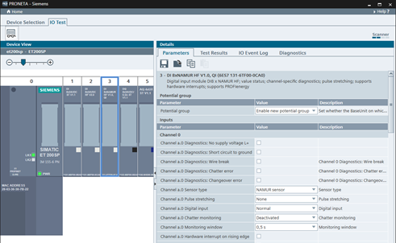
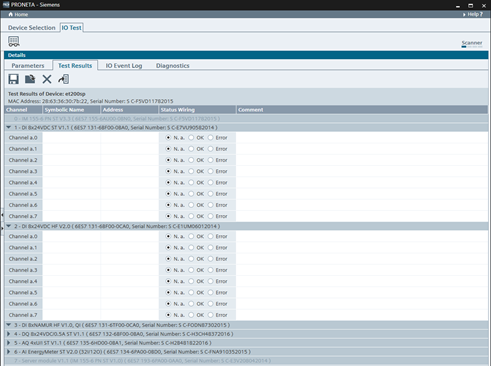
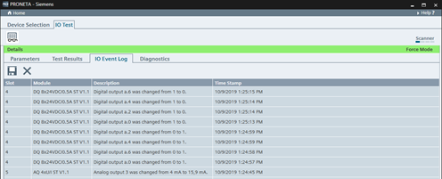
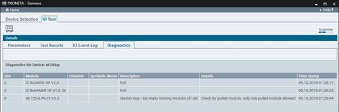

图标
名称
功能

保存参数
将整个设备的当前参数集保存到磁盘。

加载参数
从磁盘加载之前保存的参数集并将其分配到当前设备。
复制参数
将当前所选模块的参数集复制到 Windows 剪贴板。
粘贴参数
从 Windows 剪贴板将之前复制的模块参数集粘贴到当前选定模块。如果剪贴板中的参数集不适合所选模块，则图标将显示为灰色。
IO 测试任务用于在安装 CPU 之前检查分布式 I/O 设备的接线，并以快速、准确且简单的方式拟定测试结果。
在“IO 测试”模式下，画面包含两个主视图：
“设备视图”(Device View) (1)，被测设备的图形表示
“详细信息”(Details) 表 (2)，显示关于被测设备和一般测试的附加信息。

功能栏
功能栏中提供以下功能：
|
图标 |
名称 |
功能 |
|
强制和监视值 |
通过 PRONETA Basic 激活和禁用对设备的控制，以进行 IO 测试。 |
|
警告 |
从而，可能会导致人身伤害和人员受到电击。 在激活 IO 测试前，确保机器处于安全状态，且在操作范围内没有未授权人员。 |
|
注意 |
通过 PRONETA Basic 在设备上执行 I/O 测试之后，所连接 F-I/O 模块的 F 目标地址将会删除，从而导致模块进入安全状态。 使用相应的工程组态工具重新将 F 目标地址分配给相关 F 模块。 |
|
注意 |
要执行 IO 测试，PRONETA Basic 需要与目标设备建立 PROFINET 应用关系 (AR)。确保没有其它 PROFINET 控制器占用此连接。 |
IO 测试的状态由“设备视图”(Device View) 和“详细信息”(Details) 表标题栏的颜色指示：
浅绿色表示 IO 测试处于活动状态。同时，“强制模式”(Force Mode) 一词会显示在标题栏的右侧。
深绿色表示 IO 测试处于不活动状态。
用途
设备视图显示用户为 IO 测试模式选择的设备的符号表示。状态和 I/O LED 会实时更新，以反映物理设备的状态。

要将任意模块的视图放大，请单击模块上方的“+”符号 (1)。随后会出现一个小的弹出窗口。
单击此处的任意模块，会在“详细信息”(Details) 视图中显示该模块的参数表，或根据选择的选项卡将对应部分高亮显示。
诊断缓冲区中包含信息的模块的标题会显示为红色。
数字量 I/O
单击输出模块的任意 LED 符号可切换对应输出的状态。同样，向任意输入施加电压会使对应输入模块 LED 亮起。
要强制使用数字量值，也可以使用“ 详细信息视图”(Details View) 中的“测试结果”(Test Results) 选项卡。
模拟量 I/O
以相同方式从输入模块和输出模块读取模拟量值。
要强制使用模拟量值，可使用 弹出窗口 或 详细信息视图”(Details View)中的“测试结果”(Test Results) 选项卡。
|
注意 |
仅当激活强制模式后才会显示电机起动器单元的可选插入式连接端子（3DI/LC 模块）。 |
Popup Window 弹出窗口（IO 测试）
用途
在“设备视图”(Device View)中，设备的每个模块上方有一个“+”符号，点击此符号可打开一个弹出窗口，其中包含模块输入和输入的较大符号视图。如果打开多个模块，这些模块的弹出窗口将在一个窗口中成行排列。

单击弹出窗口部分右上角的关闭图标“´”或设备视图中模块上方的“-”符号，可再次关闭此模块的弹出窗口。要关闭整个窗口，请单击窗口右上角的关闭图标“´”。要在弹出窗口中重新排列模块，请单击相关模块的表标题并将其拖动到指定位置。
数字量 I/O
通过查看或选中和取消选中与字段连接对应的字段，可分别监视和强制数字量输入和输出。绿色字段表示活动行。
模拟量 I/O
对于模拟量模块，可在所指示通道编号旁的字段中输入符号通道名称。这些内容会自动复制到测试协议中。
可通过在相应字段中输入数值或将滑块拖过下方的滑动条来强制模拟量输出值。单击字段旁的符号可将输出复位为默认值。
“详细信息”(Details) 表包含四个选项卡，各选项卡都包含各自的功能栏：
参数 ，用于设置模块参数
测试结果，用于执行和拟定设备的接线测试
I/O 事件日志，用于监视常规事件，如模块输入和输出值的变化
诊断 ，用于记录非常规系统事件，如模块拉动和插入。
此选项卡中提供了在设备视图中选择的模块参数集的概览。这些参数只能在未运行“强制和监视值”(Force and Monitor Values) 时进行编辑（请参见 IO 测试模式，“功能栏”部分）。

参数集可存储在磁盘的文件中，从文件中加载并从 windows 剪贴板复制粘贴，以此将参数传送到不同的模块。
功能栏
功能栏中提供以下功能：
|
图标 |
名称 |
功能 |
|
|
保存参数 |
将整个设备的当前参数集保存到磁盘。 |
|
|
加载参数 |
从磁盘加载之前保存的参数集并将其分配到当前设备。 |
|
|
复制参数 |
将当前所选模块的参数集复制到 Windows 剪贴板。 |
|
|
粘贴参数 |
从 Windows 剪贴板将之前复制的模块参数集粘贴到当前选定模块。如果剪贴板中的参数集不适合所选模块，则图标将显示为灰色。 |
“保存参数”(Save Parameters) 和“加载参数”(Load Parameters) 命令用于在设备之间传送参数集，有助于组态多台相同设备。与之相反，“复制参数”(Copy Parameters) 和“粘贴参数”(Paste Parameters) 命令主要用于“克隆”一台设备内的模块组态。
此选项卡提供当前所选设备的实际 IO 测试的功能。

根据现有 I/O 模块，将测试表垂直分为几个部分。可通过单击节标题中的三角形符号“►”，再次将各部分折叠或展开。
测试表包含以下列：
|
注意 |
“符号名称”(Symbolic Name) 和“地址”(Address) 的值仅作为测试人员的存储辅助值。 |
可通过保存和加载协议暂停 IO 测试并在稍后的时间点进行恢复。
完成测试后，该协议可存储以记录正确的设备接线。（有关详细信息，请参见 功能栏。）
功能栏中提供以下功能：
|
图标 |
名称 |
功能 |
|
|
保存协议 |
将当前 IO 测试的结果存储到磁盘（格式：CSV），无论是在测试完成时还是测试中断时均可进行该操作。 |
|
|
加载协议 |
从磁盘加载早期 IO 测试的测试结果以继续测试。 |
|
复位测试协议 |
丢弃当前测试的结果，并允许用户重新开始。所有结果均将从 PRONETA Basic 中删除。 |
|
|
从 AML 文件导入符号名称 |
从 AML 文件导入设备/IO 的符号名称（参见使用 AML 文件作为参考）。 |
要为 I/O 提供符号名称，可以使用 AML 文件。
待测试设备的以下功能必须与 AML 文件中的设备名称相匹配：
如果匹配且 AML 文件包含 I/O 的符号名称，则 AML 文件中的名称将用于测试设备中的 I/O，并显示在“符号名称”(Symbolic Name) 列中。
该选项卡记录了 IO 测试处于激活状态时模块发生的所有常规事件（如输入和输出值的更改）的日志。
单击列标题将对表进行相应排序。

功能栏
功能栏中提供以下功能：
|
图标 |
名称 |
功能 |
|
|
保存 IO 事件日志 |
将事件日志保存到磁盘（格式：CSV）。 |
|
|
复位 IO 事件日志 |
清除当前事件日志中的所有条目。 |
此选项卡中的表显示了 IO 测试处于激活状态时设备发生的所有非常规事件的记录，如模块牵拉或信号线断开。
如果诊断缓冲区包含模块相关的事件，则“设备表”(Device Table) 中相应的模块标题将显示为红色。
单击表的列标题将对表进行相应排序。
选择一个表条目将在”设备视图”(Device View) 中突出显示相应的模块。相反，在“设备视图”(Device View) 中选择模块将突出显示该表中有关模块的第一个条目。

表包含以下列：
“插槽”(Slot)
“模块”(Module)
“通道”(Channel)
“符号名称”(Symbolic Name)（如在测试协议选项卡中输入的内容）
“说明”(Description)
“详细信息”(Details)
“时间戳”(Time Stamp)